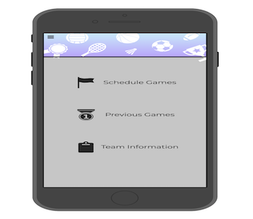

Problem Statement: Amateur Sports Teams

Amateur sport teams currently do not have an organized way to connect to other amateur sports teams in order to play casual games. Our solution should provide these amateur athletes a way to connect with each other and compete.
Affinity Diagram: Amateur Sports Teams

In order to discover all of the aspects pertaining to the organization of pick-up games for amateur sports teams, our group noted everything that we could think of.
Persona: 4 Personas for Amateur Sports Teams
4 personas for users of an app connecting amateur sports teams.
Storyboard: 4 Storyboards for Amateur Sports Teams
The stories of multiple individuals and their discoveries of a much-needed app that finds other local sports teams to compete with.
Sketch: Multiple Sketches for Amateur Sports Teams
Various sketches for the possible solutions pertaining to an app connecting amateur sports teams.
Paper Prototype: Amateur Sports Teams App
A paper prototype that utilizes the essential functions of an app for amateur sports teams.
Usability Testing: Amateur Sports Teams App
The feedback collected through multiple usability tests with one scenario and three tasks.
Low-Fi Prototype: Amateur Sports Teams App
A low-fidelity prototype for the TeamFinder application for amateur sports teams.
Hi-Fi Prototype: Amateur Sports Teams App
A high-fidelity prototype exploring all aspects of an application connecting amateur sports teams called TeamFinder.